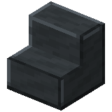
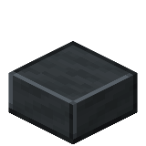
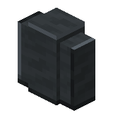
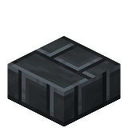
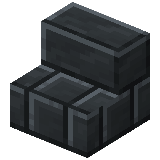
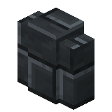
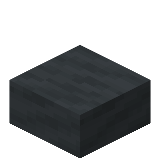
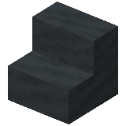
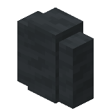

About
Smoky quartz blocks, smoky quartz bricks, and smooth smoky quartz are mineral blocks, crafted from smoky quartz.
Smoky quartz slabs, smoky quartz brick slabs, and smooth smoky quartz slabs are slab variants of their respective blocks.
Smoky quartz stairs, smoky quartz brick stairs, and smooth smoky quartz stairs are stair variants of their respective blocks.
Smoky quartz walls, smoky quartz brick walls, and smooth smoky quartz walls are wall variants of their respective blocks.
Click here to view all smoky quartz block variants.
Obtaining
Crafting

Craft one smoky quartz block by placing nether smoky quartz in a two-by-two square in a crafting table.
Craft four smoky quartz bricks by placing smoky quartz blocks in a two-by-two square in a crafting table.
Craft one chiseled smoky quartz block by placing two smoky quartz slabs on top of each other in a crafting table.
Craft two smoky quartz pillars by placing two smoky quartz blocks on top of each other in a crafting table.
Smelting


Smelt smoky quartz blocks in a furnace to make smooth smoky quartz.
Stonecutting

Craft smoky quartz bricks by placing a smoky quartz block in a stonecutter.
Craft a chiseled smoky quartz block by placing a smoky quartz block in a stonecutter.
Craft smoky quartz bricks by placing a smoky quartz block in a stonecutter.
Usage
Crafting
Recipes
Craft six smoky quartz, smoky quartz brick, or smooth smoky quartz slabs in a crafting table by placing three matching blocks in a single row.
Craft four smoky quartz, smoky quartz brick, or smooth smoky quartz stairs in a crafting table by placing three matching blocks in a staircase pattern.
Craft six smoky quartz, smoky quartz brick, or smooth smoky quartz walls in a crafting table by filling the middle and bottom rows with matching blocks.
Stonecutting
Recipes
- Ingredient: Smoky quartz block
- Results:
- Smoky quartz brick slab (x2)
- Smoky quartz slab (x2)
- Smoky quartz brick stairs
- Smoky quartz stairs
- Smoky quartz brick wall
- Smoky quartz wall
- Ingredient: Smoky quartz bricks
- Results:
- Smoky quartz brick slab (x2)
- Smoky quartz brick stairs
- Smoky quartz brick wall
- Ingredient: Smooth smoky quartz
- Results:
- Smooth smoky quartz slab (x2)
- Smooth smoky quartz brick stairs
- Smooth smoky quartz brick wall
Smoky Quartz Block Variants

Stairs

Slab

Wall
Smoky Quartz Brick Variants

Stairs

Slab

Wall
Smooth Smoky Quartz Variants

Stairs

Slab

Wall